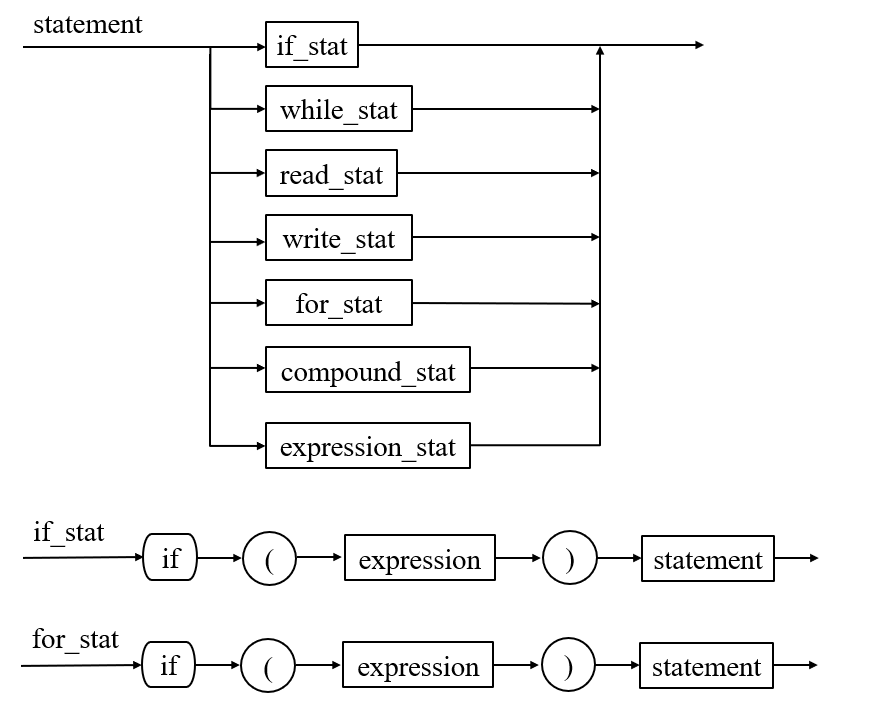
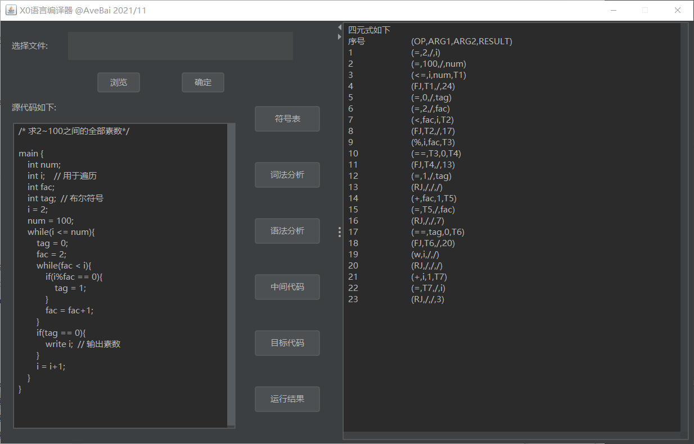
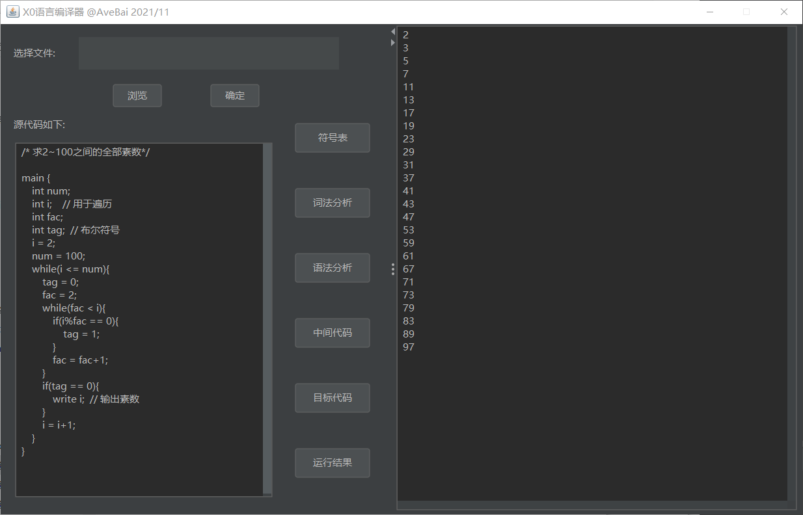

Java实现的X0语言编译器
[TOC]
介绍
编译器是将高级语言编写的程序转换成能在一台计算机上执行的等价目标代码或机器语言程序的软件系统。可以扩展到包含将一种高级语言程序转换成另一种高级语言程序的系统，或者从一种机器语言程序转换成另一种机器语言程序的系统等等。
本项目由 Java 语言编写完成，可以将事先定义好的 X0 语言转换为中间语言（采用四元式），进一步转换成目标语言（与 PL/0 语言相同的指令代码），并能用解释器运行。本项目支持代码文件的读取，编译代码的键盘输入，词法分析、语法分析、出错处理、中间代码、目标代码、符号表和运行结果的输出。
完整说明见设计文档。
编译器系统结构
编译器的词法分析、语法分析、语义分析与中间代码生成、目标代码生成是按顺序依次进行的，语法分析通过后转入语法分析，若词法分析未通过则无法进行语法分析，语法分析通过后转入语义分析与中间代码生成，最后执行目标代码生成。
X0语言文法
说明
该语言变量有整型、整型一维数组、字符型，原则是先声明再使用。
语句有 6 种：if 语句、while 语句、read 语句、write 语句、compound 语句和 expression 语句。if 语句没有悬挂 else 二义性。输入/输出语句由保留字 read 和 write 开始。read 语句一次只读一个变量，write 语句一句只写出一个表达式。
X0 语言有两类表达式：布尔表达式和算术表达式。算术运算是左结合的，具有通常的优先关系。比较运算是非结合性的：每个没有括号的表达式只允许一种比较运算。比较运算的优先级比算术运算低。
X0 语言没有过程或函数，因此没有调用。
注释符：多行注释用 /*…*/ 括起，单行注释用 // 开头。词法分析程序并不输出注释，在词法分析阶段，注释的内容将被删掉。
终结符：采用 #，在词法分析阶段隐性添加，并用于 LL(1) 语法分析。
扩展：
1.for 语句。采用 Java 格式，例如 for(i=0;i<10;i++){}。
2.求余运算符 %，优先级同乘除。
语法规则
采用 EBNF 描述
1 | program = "main" "{" declaration_list statement_list "}". |
语法图

LL1文法
1 | S -> main{AU} |
判断是否符合两条限制规则
限制规则如下：
找出图中每一个分支点，考察每一个分支点的分支的头符号是否相异；
找出图中每一个透明结构（无需读入一个符号就可以贯通），考察每一个透明结构的头符号集合和其跟随符号集合是否相异。
经过分析上述语法图中符合两条限制规则。
过程调用相关图
语法出错定义
- 语法分析步骤数过多
- 语法错误，缺少xx符号
- 没有主函数
- 非法标识符
- 非法语句
- 非法数据类型
- 声明缺少标识符
- 未声明数组长度
- 标识符未声明
- 非法标识符，不能write
- 非法标识符，不能read
- 不能进行布尔运算的数据类型
- 非法布尔运算符
- 不能进行算术运算的数据类型
- for 格式错误，循环因子需要++或—
- 词法分析未通过，无法进行语法分析
虚拟机
组织结构
用一个数组存放指令代码，最多存储 200 个指令。
指令以字符串的形式储存，格式为：序号+指令名称+地址+指令数据。
指令系统及其解释
指令格式同 PL/0 虚拟机。即：
虚拟机指令结构 每条虚拟机指令包括三个字段：
f：虚拟机指令名称
l：引用层与声明层的层次差或某些相近功能指令的区分码
a：某些指令可传入的参数或运算指令的区分码
| LIT 0,a | 将数a置入栈顶 |
|---|---|
| LOD 0,a | 将 0,a 形成的栈地址变量值置入栈顶 |
| STO 0,a | 将栈顶值存到 0,a 形成的栈地址变量 |
| INT 0,a | 预留 a 个存储位置 |
| JMP 0,a | 无条件转移 |
| JPC 0,a | 条件转移 |
| OPR 0,a | 算术关系运算符 |
| 当 a = 0 | 返回调用程序 |
| 当 a = 2 | 相加 |
| 当 a = 3 | 相减 |
| 当 a = 4 | 相乘 |
| 当 a = 5 | 相除 |
| 当 a = 6 | 自加 |
| 当 a = 7 | 自减 |
| 当 a = 8 | 判相等 |
| 当 a = 9 | 判不等 |
| 当 a = 10 | 判小于 |
| 当 a = 11 | 判小于等于 |
| 当 a = 12 | 判大于 |
| 当 a = 13 | 判大于等于 |
| 当 a = 14 | 求余 |
| 当 a = 15 | 输出 |
read 没有专门的指令，将翻译为 LIT+STO。
中间代码
编译器采用四元式作为中间代码，格式为：序号 + (运算符,操作数1,操作数 2,结果/跳转地址)。
其中运算符为 FJ 时表示 if、for、while 语句块的开始，若不满足条件则跳转到 RJ 的下一句；RJ 表示 if、for、while 语句块一次循环的结束，并无条件跳转到语句块的开始。
测试
测试环境
Windows 10 家庭版
IntelliJ IDEA 2021.2
jdk 1.8.0_301
测试用例
No.1
测试目标：求 2~100 之间的全部素数
源程序：
1
2
3
4
5
6
7
8
9
10
11
12
13
14
15
16
17
18
19
20
21
22
23
24/* 求2~100之间的全部素数*/
main {
int num;
int i; // 用于遍历
int fac;
int tag; // 布尔符号
i = 2;
num = 100;
while(i <= num){
tag = 0;
fac = 2;
while(fac < i){
if(i%fac == 0){
tag = 1;
}
fac = fac+1;
}
if(tag == 0){
write i; // 输出素数
}
i = i+1;
}
}测试步骤：
运行主程序
点击符号表
- 点击词法分析
- 点击语法分析
- 点击中间代码
- 点击目标代码
- 点击运行结果
测试结果：


No.2
测试目标：求两个数的最小公倍数
源程序：
1
2
3
4
5
6
7
8
9
10
11
12
13
14
15
16
17
18
19
20
21
22
23
24/* 求两个数的最小公倍数*/
main{
int a;
int b;
int c;
int x;
int y;
read a;
read b;
if(a < b){
//令a为较大的数
c = a;
a = b;
b = c;
}
x = a;
y = b;
while (x % y != 0)
{
x = x + a;
}
write x;
}测试步骤：
- 运行主程序
点击选择文件，选中 LCM.txt 文件，点击确定
点击符号表
- 点击词法分析
- 点击语法分析
- 点击中间代码
- 点击目标代码，在弹窗内依次输入 8 和 9
- 点击运行结果
测试结果：
略，见测试文档。
No.3
测试目标：测试 for 语句的正确性，包括嵌套 for 语句
源程序：
1
2
3
4
5
6
7
8
9
10
11
12
13
14
15
16
17
18/* for 循环示例*/
main{
int i;
int j;
int k;
for(i = 0; i < 3; i++)
{
for(j = 0;j < 3;j++)
{
write j;
}
}
for(k = 9; k >= 0; k--)
{
write k;
}
}测试步骤：
- 运行主程序
点击选择文件，选中 for.txt 文件，点击确定
点击符号表
- 点击词法分析
- 点击语法分析
- 点击中间代码
- 点击目标代码
- 点击运行结果
测试结果：
略，见测试文档。
源码地址
https://github.com/10185102110/X0-compiler
文档不便公开。